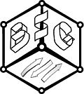
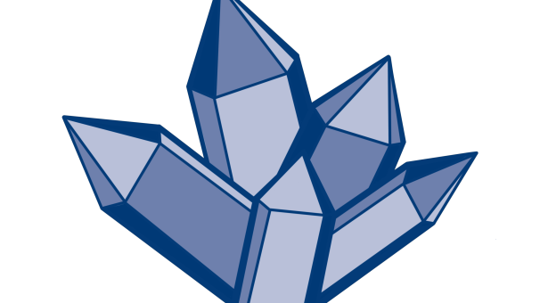
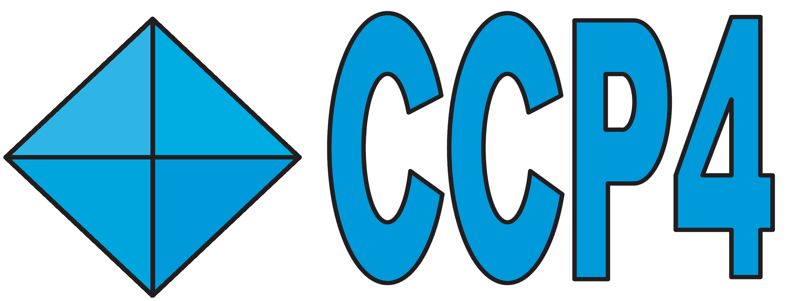
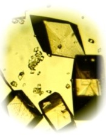
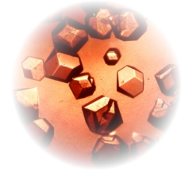
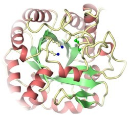
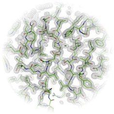

All constructive suggestions for improvement are very welcome indeed and please let me know what you would like to see in this page!
No thrills warning: the format of this page is basic.

Group Activities
Each year the BSG organises sessions at the BCA Spring meeting,
organises a 1 day winter meeting and organises a protein
crystallography summer school. Contact the BSG


CCP4-BCA Summer School, 6 - 11 September 2026, John Innes Centre, Norwich.
The CCP4-BCA Protein Crystallography Summer School is intended for students and researchers relatively new to crystallography. Its dual aims are to provide comprehensive training in crystallography and to promote best practise through a combination of lectures and hands-on tutorials. Lectures will cover the range of techniques required for a protein structure solution, from protein expression through to structure validation. Intensively supervised computer tutorials will enable students to translate the theory presented in the lectures into practice. There will also be a crystal manipulation and cryo-cooling workshop.
For more details and registration, please click here.



